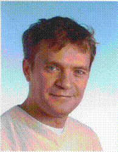

Profil
|  |
Yuliy Poluyanov
|
Adresse |
Landsberger str 464, 81241, München |
|
|
|
|
Geburtsdatum |
24.09.1962 |
|
Familienstand |
Verheiratet, 1 Kind |
|
Mobile |
0151 23454570 |
|
Tätigkeiten/Kurzprofil:
Ausbildung: |
Embedded Entwicklung. Automotive, Avionics, Industrie. Software
- Hardware Entwurf und Design von Embedded Systemen M3 + M4, Freescale Kinetis, Renesas, PowerPC, Infenion,
Microchip. MATLAB,
SIMULINK, dSPACE, ESYS BMW, CANoe, ADAS, UDS Protokol, CANanalyser Linux /
HP UNIX Software Entwicklung in C/C++, Assembler BLDC Motoren, DC-AC Wandlung. PID Regelung, SQLite, Waveform Signalgenerierung. Oszilloskop, Signalgeneratoren Sensoren Infrared/Hall/GPS. Datenübertragung kabelgebunden und kabellos, Laser, SPI, I2C, Flexray, phCAN, MOST, Ethernet, Echtzeit-Ethernet.
Odessa Staatsuniversität, Ukraine Bachelorabschluss in Mathematik & Physik Abschlussarbeit: „Computersimulation einer Überschallströmung“ |
Beruflicher Werdegang/Projekterfahrungen
Jan 2020 – Jetzt Hamilton AG, Bonaduz, Schweiz
GUI, für Beatmungsgerät.
C++ 14. Qt. QML, Embedded, Linux, Real time.Cortex,
Verwendete Werkzeuge in diesem Projekt: Qcreator, Qt. Qtest, QML.
Sep 2019 – Jan 2020 Delta Energy System GmbH. Soest
Hochvoltage Lädegeret Automotive, BMW,test, S/W Developer
C MISRA.
Verwendete Werkzeuge in diesem Projekt: C, Autosar.
Sep 2018 – Sep 2019 VARTA Storage GmbH. Nördlingen
Enegy Management System Photovoltaic, Kernel Linux, Drivers,
Nested Zustandautomaten.
C++ 14. Qt
Verwendete Werkzeuge in diesem Projekt: NetBeans, VMWare.
März 2018 – Sep 2018 Astyx GmbH Ottobrun.
Radar Signalprocessing 77 Ghz, Xylinx Zynq, FPGA, Zustandautomaten, Parallelexecution. C++ 14. Metaprogramming
Verwendete Werkzeuge in diesem Projekt: Eclips, Osci, Git.
Sep 2017 – März 2018 NXP Semiconductors GmbH, München.
Videoprocessing, OpenVX, FUSI, Data parallel GPU programming, ADAS application.
Verwendete Werkzeuge in diesem Projekt: Visual Studio, NXP Hardware simulation Environment, Git.
Juni 2017 – Okt 2017 Avago Technologies GmbH, Broadcom Limited. Regensburg.
Software- Hardware concept prototype von wireless Energy transmission via Laser beam. Energieübertragung, Hochgeschwindigkeit UART über Infrarotlaser, Embedded C, C++, Bootloader, DriverLib von TI, FUSI, Embedded Socket.
Verwendete Werkzeuge in diesem Projekt: Code Composer Studio TI, Git, MSP432, TIVA TM4C129 Cortex Architektur.
Juni 2016 – Okt 2016 Carl Zeiss Microscopy, Oberkochen.
C++ code Review. GoogleTest Framework, Unit Test. Performance Measurement. Error-, Functional tests.
Verwendete Werkzeuge in diesem Projekt: SVN, MS Visual Studio 2012.
März 2016 – Juni 2016 MBTech Group GmbH, Neutraubing.
Reverse Engineering. Dokumentationerstellung nach existierte C code.
Code Review. Dokumentation Managemet.
Verwendete Werkzeuge in diesem Projekt: PTC, Enterprise Architect, Understand 2.5
Mai 2016 – Sep 2016 Valeo Schalter und Sensoren GmbH, Bietigheim-Bissingen.
(Home Office, Offline)
SCALA Projekt, Algo-Entwicklung,
Algorithmen zur Objekt- (Fußgänger, Radfahrer, PKW, LKW) und Motion-(Richtung, Geschwindigkeit, max. mögliche Beschleunigung und Richtung) Erkennung
Verwendete Werkzeuge in diesem Projekt: Eclipse C++. SVN
Dez 2015 – März 2016 Danfoss Power Solutions GmbH, Neumünster.
SW Entwicklung und Pflege. Videoprocessing, overlay and capture Mode.
Freescale i.MX35 Platform. Analysis, SW Korrektur, Unit Test, Quality Sicherung,
Verwendete Werkzeuge in diesem Projekt: Linux Kernel 2.6. C/C++. Eclipse, SVN
März 2015– Dez 2015 BMW AG, München. Abt. E-482.
Objektorientierte SW Entwicklung für BDC 2018 (Body Domain Control ECU, Gateway). SW Entwurf, Architektur, Codierung, Unit Test, Build/Release management. Quality Sicherung, Support von Offshore Team (India). HIL Test Unterstützung. UDS Protokol. ARM M3 Cortex, OSEK.
Verwendete Werkzeuge in diesem Projekt: AUTOSAR 4. C/C++, ASCET. Vector CANoe, Eclipse, CARMEN , Esys. Jenkins, MISRA, Jira, SVN, GoogleTest
Jan 2015– März 2015 Magna Electronics Europe GmbH, Sailauf
Serienentwicklung von Embedded Software für Mulikamera Parkassistent auf der Basis Xilinx Zynq 7020 Prototype Entwicklung. Videoprocessing. Systemoptimierung. Komplexe Zustand Automaten. qSPI. FPGA C/C++. SQLite, Assembler
Verwendete Werkzeuge in diesem Projekt: C/C++, Codeo, Eclipse, MKS, CANoe , GDB, VxWorks, Linux
Sep 2014 – Dec 2014 U-shin Deutschland Zugangsysteme GmbH
BMW EWS Projekt. Software Integrator Autosar. HW . Renesas. Freescale. Varianten Codierung.
Unit Test, IntegrationTest Documentation. Requirements, V-Modell
Verwendete Werkzeuge in diesem Projekt: C/C++ VectorCAST, Cosmic compiler, GrenHills compiler. DOORS, Jenkins, Vector CANoe.
März 2013– Sep 2014 Harman Becker Automotive GmbH, Garching bei München
Entry Nav (BMW) Team. BMW Navigation system. System Ingenieur. Navi, ADAS, Infotainment. Car2Car. Projekt Management. Bug/Performance Analyse. Analyse von Störungen und Fehlerzuständen. Requirement Management. Kommunikation mit dem Endkunden. C++ Code Refactoring. GPS Driver. HMI. Gateway. UDS Protokol. Varianten Management.
Verwendete Werkzeuge in diesem Projekt: C/C++(11), Eclipse, ELVIS, VxWorks, P4Win, Esys. MOST Optolyzer, EDIABAS, GDB, Valgrind, Boost, GNU Toolchain, Jira, VxWorks, PANAMA
März 2012– Feb 2013 Lear Corporation, München
Body Domain Control (BMW) Team.
Funktionsentwicklung Autosar Architektur. dSpace, MATLAB Programmierung. Funktionsentwicklung (C/C++, Assembler). Hall Sensors Digital/Analog I/O digital switches, locks, BLDC Motors. Smart Analog Chips. Flexray/Can/Lin Gateway. Bugfix. Testing, Freescale Mikrokontroller. SPI, PWM LIN, CAN Bus, JTAG, Esys.
Verwendete Werkzeuge in diesem Projekt: Eclipse, Jira, Freescale Compiler, C/C++, Doors, eSYS, Keil, Vector CANape, CANoe, LIN, CAN.
Okt 2011– Feb 2012 Audi AG, Ingolstadt
ARA- Projekt. Body Controll Management.
Modellbasierte Funktionsentwicklung mit Matlab/Simulink. Code Generierung. Autosar Achitektur - Erstellung eines Basissoftware- Lastenhefts. Programmierung und Funktionsentwicklung (C/C++). Kalman Filter. Freescale 32-bit Mikrokontroller. LIN CAN Bus. Brushless Motor. Bildbearbeitung. Infrared Sensoric.
Verwendete Werkzeuge in diesem Projekt: Matlab, Simulink, Targetlink, C/C++, dSPACE Autobox, Vector, Doors
Okt 2010– Okt 2011 BMW Group, München. BMW i3 Projekt.
Serienentwicklung von Embedded Software für Antriebssteuergeräte auf der Basis moderner 32-/16-/8. Bit Micro-Controllers (Microchip, Ifenion) Systemoptimierung, Modelbasierte Sftwareentwicklung von AC/DC Steuerung SW. Komplexe Zustand Automaten. PID Regelung. SPI. C/C++. Assembler
Verwendete Werkzeuge in diesem Projekt: C/C++ , Assembler, UML, Synergy SWEPiT, Matlab/Simulinc Embedded Coder AUTOSAR, Inca, Doors, Matlab/Simulink, GDB, JTAG
Feb 2010– Okt 2010 THALES GmbH, Stuttgart
Design Developing von Embedded Multilateration Software. Avionics. Matlab/Simulink Simulation. Echtzeit ELINOS. Power PC. EuroControl Asterix Protokoll. DO-178 (B/C)
Systemoptimierung, Entwicklung von Synchronisierung Software. Komplexe Zustand Automaten. PID Regelung. 1 Ghz Radio Technik. GPS Time Synchronisierung in nanosec Bereich. Digital Schaltungen.
Durchführen von Test- und Versuchsreihen.
Nachrichtentechnik, Signal Bearbeitung, FPGA, VHDL, Embedded Entwicklung .
Verwendete Werkzeuge in diesem Projekt: C/C++ UML, Doors, Perl, SQLite, Shell Scripts, GnuPlot, MatLab, SimuLink, ELINOS, FPGA, VHDL, Embedded Software, Eclipse, 1Ghz Radio, Echtzeit- Ethernet
Juli 2008–Nov 2009 Telefonica O2 Germany GmbH, München
EAI C/C++/Java/Perl Entwickler, QA. EAI RCS Team.
Design Developing Testing und Optimierung von O2 Enterprise Application Integration, EAI, Retail Customer Stack .
Durchführung von Systemoptimierungen und Diagnosen. QA.
Nachrichtentechnik, XA Transactions, Tuxedo, TIBCO,
Verwendete Werkzeuge in diesem Projekt: C/C++ Java. Perl, Shell Scripts, Tuxedo, WebLogic 9, Oracle 9, 10g, ProC, SQL, CORBA, XML, UMTS Stack, Arbor Billing, Clearcase, UMTS/GSM, ClearQuest UML Rational Rose, DDD,HP Unix.
Januar 2008–Juni 2008 Verigy Germany GmbH, Böblingen
C/C++ Entwickler, Signal Verarbeitung, Embedded RTOS
Design und weiter Entwicklung und Optimierung von Verigy 93000 ATP (Chip Tester), Firmenware. Harte Echtzeitforderungen.
Design, Entwicklung und Testing der High Volume Logic Library.
Kernel Entwicklung, Embedded Hardwarenähe Entwicklung. Waveforms Generators, Messtechnik, Oszilloskope.
Verwendete Werkzeuge in diesem Projekt: C/C++. TTCN-3, Ruby, STIL, Linux Red Hat, UNO, XML, CVS, UML Rational Rose, Embedded Linux, Elektrische Messtechnik, Signal Generators, MatLab, RedHat Linux.